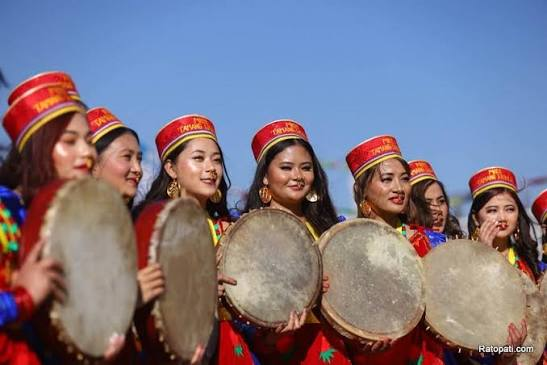
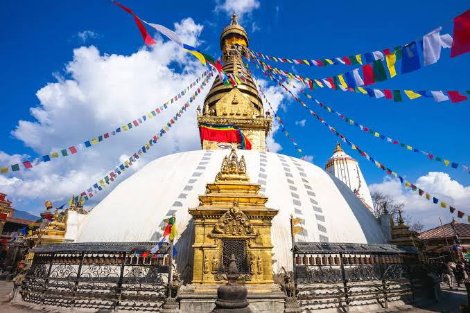

Nepali Culture Explorer
Nepali Culture ExplorerLhosar
लोसार(लो=वर्ष,सार=नयाँ)
लोसार हिमाली तथा पहाडी समुदायले नयाँ वर्षको स्वागत, शुद्धीकरण र प्रकृतिप्रति कृतज्ञता व्यक्त गर्दै मनाउने महान् पर्व हो।
- प्रकारहरू: तमु लोसार (गुरुङ), सोनाम लोसार (तामाङ), र ग्याल्पो लोसार (शेर्पा/भोटे)
- मुख्य सन्देश: शुद्धीकरण, नयाँ आशा, र सामाजिक सद्भाव
- मुख्य आकर्षण: गुथुक सेवान, लुङदार/तारचो फेर्ने, सेतो खादा र सेलो/स्याब्रु नाच
Lhosar Visuals


Lhosar Audio
लोसार किन मनाइन्छ? (ऐतिहासिक घटना र पौराणिक कथा)
लोसार मनाउनुको पछाडि हजारौँ वर्ष पुरानो इतिहास र पौराणिक मान्यताहरू जोडिएका छन्:
- प्राकृतिक तथा कृषि चक्र (Lunar Calendar): हिमाली क्षेत्रमा जाडो याम सकिएर वसन्त ऋतुको आगमन हुँदा र नयाँ खेतीपातीको चक्र सुरु हुँदा लोसार मनाउने परम्परा सुरु भयो। यो चन्द्रमाको गति (Lunar Calendar) मा आधारित नयाँ वर्ष हो।
- बेलमा राज्यको पौराणिक कथा (मन्दोका/बेलमा): बौद्ध धार्मिक इतिहास अनुसार, प्राचीन कालमा 'बेलमा' नामक राक्षसी/पापी राजाको अत्याचारबाट जनता प्रताडित थिए। एक धार्मिक योद्धा (चोङ्गी/गुरु) ले सो पापी राजाको अन्त्य गरी जनतालाई कष्टबाट मुक्ति दिलाएका थिए। त्यही खुसीयालीमा पापी शक्तिमाथि पुण्यको विजय भएको उत्सवका रूपमा लोसार मनाउन थालिएको मान्यता छ।
- चीन र तिब्बतसँगको ऐतिहासिक व्यापार/सम्बन्ध: इतिहास अनुसार तिब्बतका राजा 'स्रोङ्चेन गोम्पो' र पछि 'मिवाङ छोग्याल्पो' को समयदेखि लोसारलाई राज्यस्तरमै नयाँ वर्षको रूपमा औपचारिक मान्यता दिई मनाउन थालिएको थियो।
लोसारको पौराणिक तथा सांस्कृतिक महत्त्व
- पाप/नकारात्मक ऊर्जाको शुद्धीकरण: लोसारको अघिल्लो दिन घर-आँगन सफा गर्ने, 'गुथुक' (९ थरी गेडागुडी मिसाइएको विशेष सुप) खाने र पुरानो वर्षका सबै नकारात्मक ऊर्जा, रोगव्याधि र सङ्कट फाल्ने परम्परा छ।
- प्रकृति र लामा/गुरुप्रति श्रद्धा: यस दिन गुम्बाहरूमा पूजापाठ गर्ने, डाँडाकाँडामा रङ्गीचङ्गी धार्मिक ध्वजा (लुङदार/तारचो) गाड्ने र प्रकृति तथा पितृहरूको आशीर्वाद लिइन्छ।
- समानता र क्षमापन: पुराना रिस-राग बिर्सेर मान्यजनबाट आशीर्वाद लिने (खता लगाउने) र 'तासी देलेक' भन्दै आपसमा शुभकामना र खुसी साट्ने यसको मुख्य सन्देश हो।
लोसार कसरी मनाइन्छ? (मुख्य विधिहरू)
- घरको सरसफाइ र गुथुक (Guthuk) सेवान: लोसारको अघिल्लो साँझ घर-आँगन पूर्ण रूपमा सफा गरिन्छ। यस रात ९ थरी गेडागुडी मिसाएर बनाइएको विशेष परिकार 'गुथुक' खाइन्छ, जसले वर्षभरिको नकारात्मक ऊर्जा र रोगव्याधि हटाउँछ भन्ने विश्वास छ।
- गुम्बामा पूजा र धार्मिक झण्डा (लुङदार/तारचो): मुख्य दिन एकाबिहानै नुहाएर गुम्बाहरूमा गई लामा गुरुहरूबाट पूजापाठ गरिन्छ। घर र डाँडाकाँडाहरूमा शान्ति र समृद्धिको प्रतीक मानिने रङ्गीचङ्गी धार्मिक झण्डा 'लुङदार' वा 'तारचो' फेरिन्छ।
- मान्यजनबाट आशीर्वाद र खादा (Khata): सबैजना नयाँ र परम्परिक पहिरनमा सजिएर मान्यजनहरूकहाँ जान्छन्। गलामा सेतो खादा ओढाएर र निधारमा 'चीमार' (सातु र घिउको टीका) लगाएर आशीर्वाद लिइन्छ।
- 'तासी देलेक' शुभकामना र सेलो/स्याब्रु नाच: आपसमा "तासी देलेक" (शुभकामना/सफलता मिलोस्) भन्दै शुभकामना साटासाट गरिन्छ। डम्फुको तालमा तामाङ सेलो, शेर्पा स्याब्रु र गुरुङ समुदायका परम्परागत नृत्यहरू गर्दै साङ्गीतिक माहोलमा उत्सव मनाइन्छ।
- विशेष परिकार र खानपान: घर-घरमा खाप्से (मैदाबाट बनाइने विशेष रोटी), बाबर, छ्याङ (जाँड), र कफी/चिया खुवाएर पाहुनाको स्वागत गरिन्छ।
Loshar's Most Beautiful Aspect
"लोसारको सबैभन्दा सुन्दर पक्ष भनेको 'नयाँ आशा, शुद्धीकरण र सेतो खादाको आत्मीयता' हो। गुथुक खाएर वर्षभरिको नकारात्मकता फाल्नु, डाँडाकाँडामा हावासँगै शान्तिको सन्देश फैलाउने रङ्गीचङ्गी लुङदार फेर्नु, र मान्यजनको हातबाट सेतो खादा ओढ्दै 'तासी देलेक' भन्दा पाइने आत्मीयता नै लोसारको साँचो सौन्दर्य हो।"